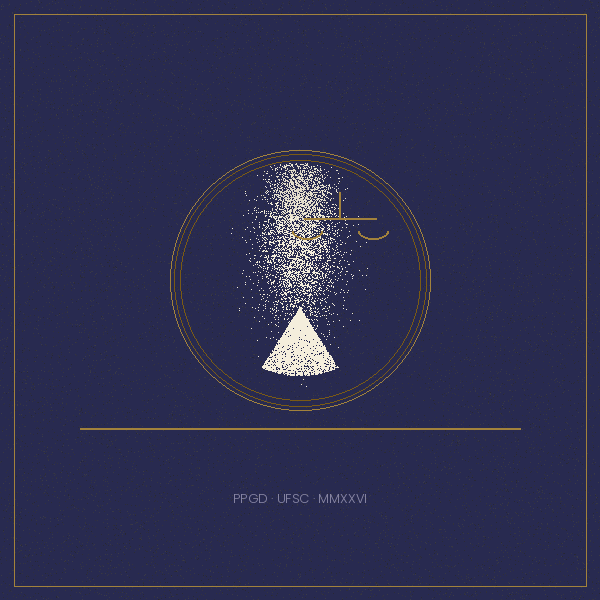
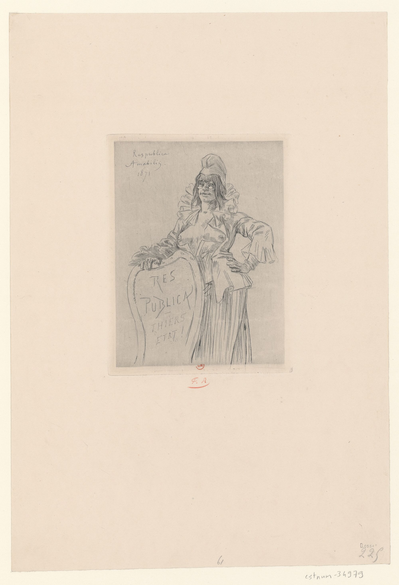
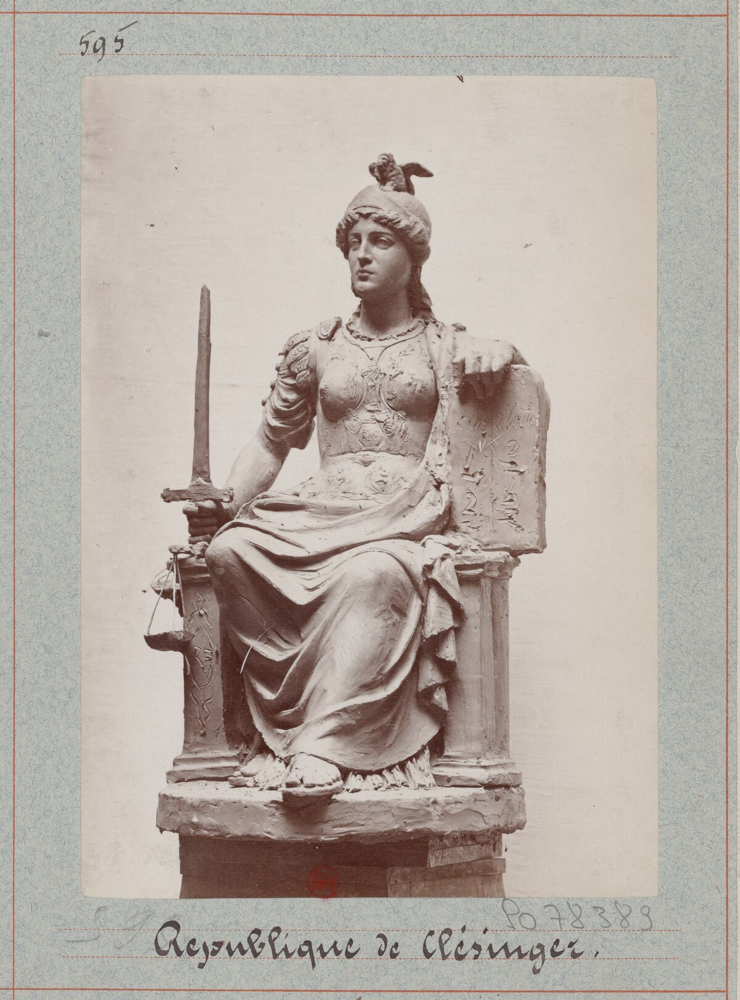
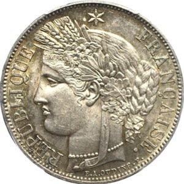
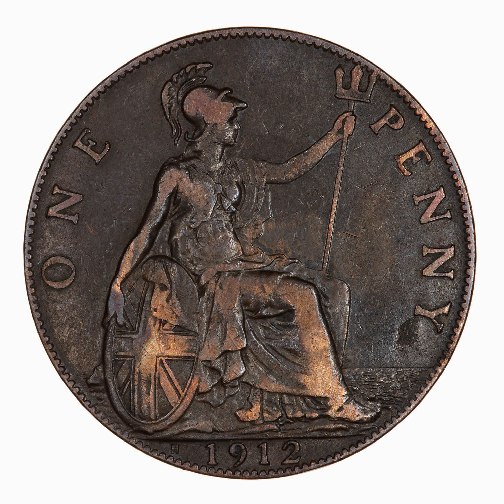
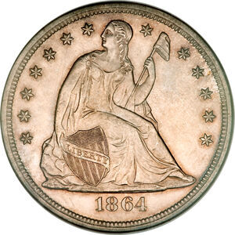
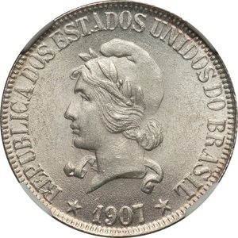
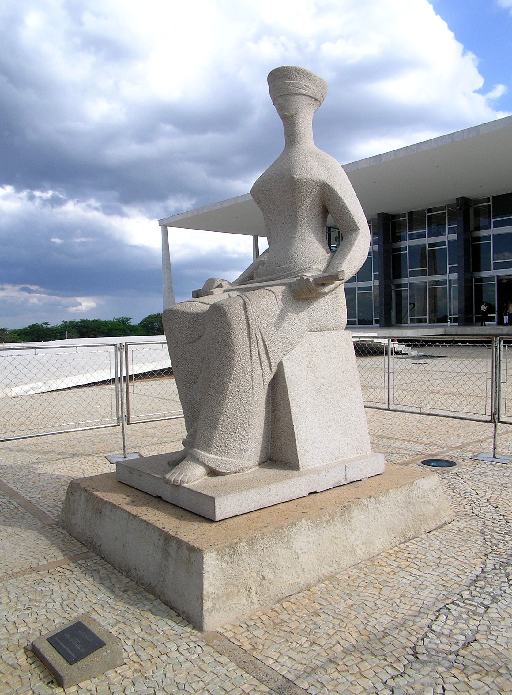
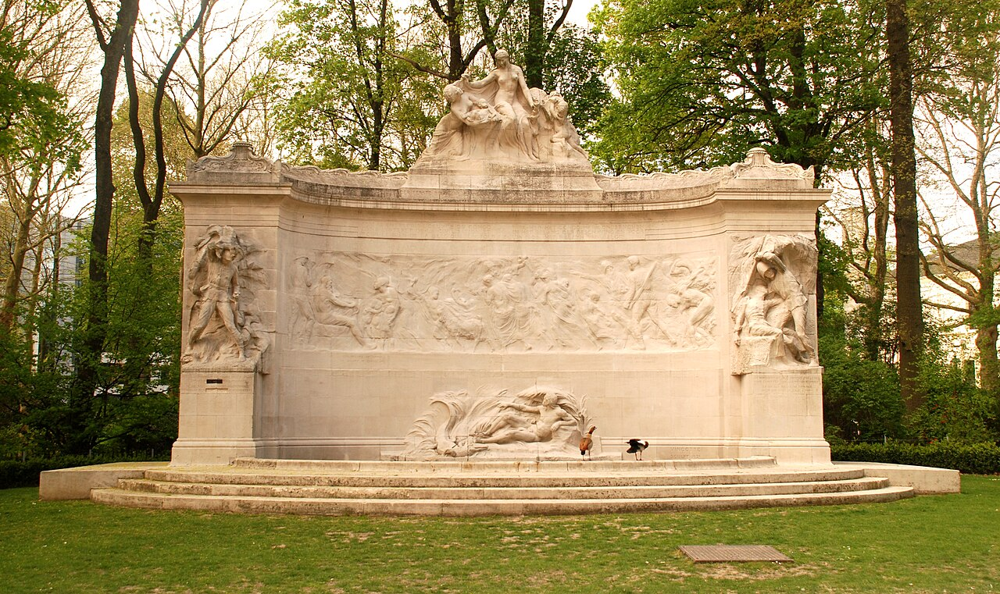

Iconocracia
a alegoria feminina na história da cultura jurídica
Do texto à imagem · da lei que subordinou à alegoria que glorificou
Orientação · Prof. Arno Dal Ri Júnior

Por que o Estado e o Direito tantas vezes aparecem com rosto de mulher?
Uma presença que se sustenta sobre uma ausência
A ordem aparece com rosto de mulher.
Justiça, Liberdade, República, Pátria, Marianne, Britannia, Germania, Columbia — o feminino encarna soberania, virtude e lei em moedas, selos, brasões e arquiteturas forenses.
As mulheres reais ficam fora da ordem.
No mesmo período, são excluídas do voto, da capacidade civil plena e da fraternidade cívica. Reverencia-se o corpo; cala-se o sujeito histórico que ele conota.
“United by marriage, chained by nationality”
A nacionalidade dependente da mulher casada — do Código Napoleão (1804) à Convenção da ONU sobre a Nacionalidade da Mulher Casada (1957).
Unidade da família
Ao casar com estrangeiro, a mulher perdia a própria nacionalidade e assumia a do marido — automaticamente, sem consentimento.
Ius sanguinis a patre
O sangue que transmite o vínculo nacional é o do pai. A mulher é condutora, nunca origem, da pertença política.
Apêndice conjugal
Por mais de um século a mulher figura na lei da nacionalidade como extensão do marido — sujeito tutelado, não titular pleno.
Mestrado em Direito · Ius Gentium · PPGD/UFSC · 1804–1957
A mesma mulher, dois registros do poder
A lei que subordinou
A mulher como sujeito acorrentado: nacionalidade dependente, capacidade tutelada, voz cívica negada.
arranjo
A imagem que glorificou
A mulher como alegoria soberana: Justiça, Liberdade, República — exaltada como símbolo da ordem que a excluía.
Quanto mais ela brilha na moeda, menos ela existe no código — a glória e o silêncio se completam.
Como as alegorias femininas moldam a autoridade legal e a percepção do poder estatal entre os séculos XIX e XX?
França · Reino Unido · Alemanha · Estados Unidos · Bélgica · Brasil — o que os padrões de circulação, adaptação e contestação dessas imagens revelam sobre a cultura jurídica e suas hierarquias de gênero.
A presença reiterada da alegoria feminina constitui um regime iconocrático — e prolonga, em imagem, o contrato sexual.
A ordem política se apresenta com rosto de mulher enquanto as mulheres reais permanecem fora da fraternidade civil. À dimensão visual desse pacto, a tese dá o nome de Contrato Sexual Visual.
Moldura teórica
Iconocracia, contrato sexual visual e a colonialidade do ver.

Iconocracia: a organização do visível
“A organização do visível que provoca uma adesão que se poderia chamar submissão ao olhar.”
De Mondzain (economia teológico-política da imagem) a Goodrich (emblemas jurídicos, “visiocracia”). A tese desloca o conceito para a cultura jurídica moderna.

Três conceitos para nomear o invisível
Contrato Sexual Visual
A dimensão visual do contrato de Pateman: reconhecimento simbólico ao feminino, exclusão cívica das mulheres reais.
Feminilidade de Estado
O Estado administra o corpo feminino como recurso icônico — esvaziado de subjetividade, convertido em infraestrutura de afeto público.
Contrato Racial Visual
A branquitude constitutiva da alegoria “universal”: a transferência transatlântica instala um padrão racializado de representação.
Uma constelação, não uma linhagem
Três regimes iconocráticos
Sacrificial
Maternidade, dor e sangue. A nação-mãe que pare e protege o povo.
Jurídico
Justiça, Liberdade, República. Selos, moedas, brasões, arquitetura forense.
Imperial
Vitória, guerra e heroísmo cívico. O arquétipo reativado em conjunturas de exceção.
Método e corpus
Métodos mistos sequenciais: ler a imagem com Panofsky, medi-la com estatística.

O corpus iconográfico
Moeda · selo · monumento · arquitetura forense · gravura · frontispício · papel-moeda · cartaz — versionados em repositório auditável e reprodutível.
Endurecimento: dez indicadores
o grau de purificação simbólica da figura feminina · escala 0–3
Ler com Panofsky, medir com estatística
Padrões no corpus
Os 10 indicadores de endurecimento medidos em todos os itens; estatística sobre regime e suporte.
Iconologia dos casos
Panofsky em três níveis via protocolo IconoCode + ICONCLASS, nos casos que a estatística destaca.
Montagem warburguiana
O Atlas Iconocrático articula visualmente o que a análise textual isolada não alcança.
Resultados
O que os números dizem sobre os regimes.

Padrões iconométricos
indicadores diferem entre regimes (Kruskal-Wallis · Dunn, p < 0,05)
R² — regime e suporte predizem o endurecimento (regressão ordinal)
famílias alegóricas que circulam pelo Atlântico
Confiabilidade inter-codificadores: Alpha de Krippendorff (ordinal), subamostra de 30 itens · prevista para a qualificação.
Estudos de caso
A estrutura se realiza no corpus arquivístico real.

Marianne: da barricada ao selo
França · NormativoA República amável e encarnada vai sendo convertida em emblema serial e anônimo — o feminino coletivo contra o retrato viril do chefe (Agulhon).




Marianne encarnada: a alegoria feita carne
França & Brasil · Feminilidade de EstadoDo busto de Bardot (1969) à irmã tropical na cédula — até o selo de 2013, desenhado a partir de Inna Shevchenko, do FEMEN: o corpo que protestou vira o rosto oficial do Estado.

“Talvez a República nunca tenha sido esculpida em mármore — talvez sempre tenha sido escrita na pele.”

Britannia e Thatcher: a alegoria encarnada
“Thatcher trouxe Britannia à vida.” — Marina Warner
A mulher real só é admitida no centro do poder quando se deixa ler como emblema da nação — domesticidade e belicismo na mesma figura.
Columbia e a Justiça no Capitólio
Estados Unidos · NormativoA liberdade sentada e a nota “Educational”: o corpo feminino como infraestrutura pedagógica do Estado — a Feminilidade de Estado em estado puro.


A República brasileira e a iconocracia tropical
Brasil · Contrato Racial VisualA alegoria neoclássica branca numa nação negra e mestiça; ao lado, o monumento colonial: a branquitude constitutiva da alegoria “universal”.




Justitia vendada e a balança como arma
Normativo · transnacional“Cega não por imparcialidade, mas porque não se enxerga no espelho do poder.”


As imagens são ruínas — e as ruínas podem ser reativadas.
Feministas, abolicionistas e trabalhadores subverteram e ressignificaram os símbolos do Estado — e a disputa pela alegoria continua viva no presente. Descrever a dominação é o primeiro gesto para contestá-la.
O Atlas Iconocrático
Oito painéis warburguianos. O sentido nasce no Zwischenraum — o intervalo entre as imagens. Montar imagens é argumentar.
Dois trilhos, uma convergência
- 1Se o Direito governa pelo olhar, pode a história do direito ser só história de textos?
- 2Quantificar a imagem enriquece ou trai a leitura iconológica?
- 3O Contrato Sexual Visual se sustenta como conceito jurídico?

Ius Gentium · PPGD/UFSC